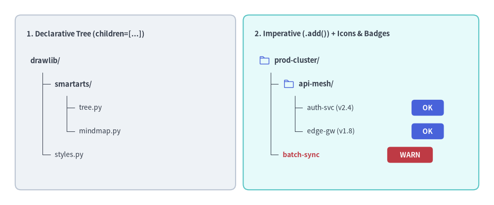
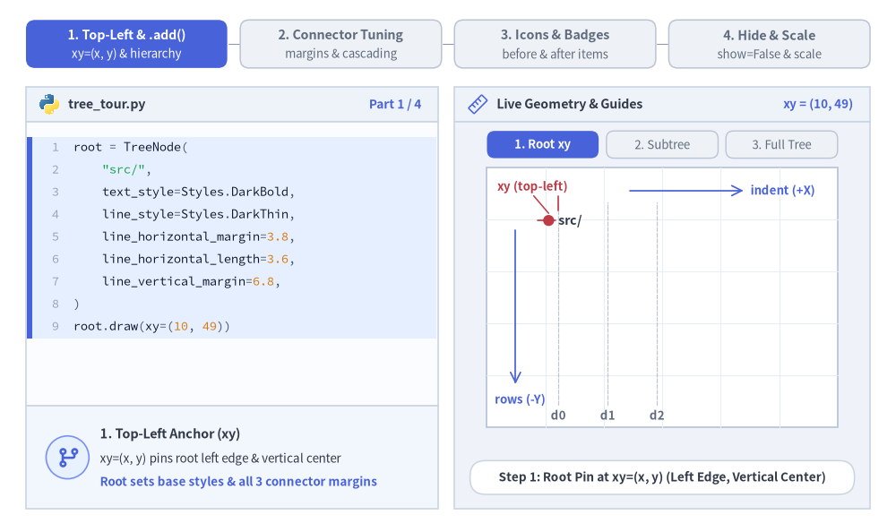
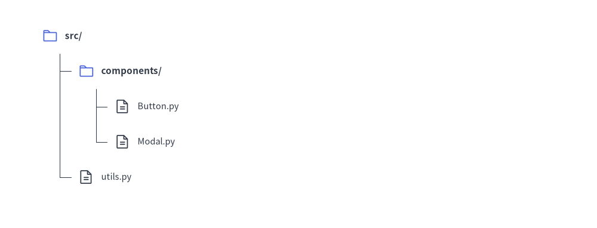
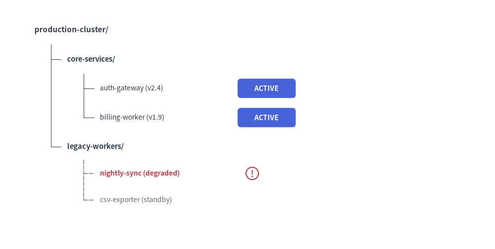

Tree（ツリー図）
TreeNode コンポーネントは、コードベースのディレクトリツリー、組織階層図、タクソノミー分類などの階層型ツリー構造を描画します。
垂直方向のブランチ整列、インデント階層、ツリーの接続線を自動的にレイアウトします。

Source Code
from drawlib.canvas import save, setup
from drawlib.icons import phosphor
from drawlib.shapes import rectangle
from drawlib.smartarts import TreeNode
from drawlib.styles import Styles
from drawlib.text import text
setup(width=130, height=54)
# 1. Left Card: Declarative Nested Hierarchy (children=[...])
rectangle((33, 27), width=58, height=46, style=Styles.Neutral.patch(shape_r=1.5))
text((7, 45.0), "1. Declarative Tree (children=[...])", style=Styles.DarkBold.patch(text_size=10.5, halign="left"))
decl_root = TreeNode(
"drawlib/",
text_style=Styles.DarkBold.patch(text_size=10.5),
line_style=Styles.DarkThin,
line_horizontal_margin=3.2,
line_horizontal_length=3.0,
line_vertical_margin=6.2,
children=[
TreeNode(
"smartarts/",
children=[
TreeNode("tree.py", text_style=Styles.Dark.patch(text_size=10.0)),
TreeNode("mindmap.py", text_style=Styles.Dark.patch(text_size=10.0)),
],
),
TreeNode("styles.py", text_style=Styles.Dark.patch(text_size=10.0)),
],
)
decl_root.draw(xy=(8, 38.0))
# 2. Right Card: Imperative (.add()) with Vector Icons & Trailing Badges
rectangle((95, 27), width=62, height=46, style=Styles.SecondaryNeutral.patch(shape_r=1.5))
text((67, 45.0), "2. Imperative (.add()) + Icons & Badges", style=Styles.DarkBold.patch(text_size=10.5, halign="left"))
TreeNode.register_drawing_item(
name="hero_dir",
location="before",
padding_width=4.2,
function=phosphor.folder,
style=Styles.PrimaryFlat,
args={"width": 3.0},
)
TreeNode.register_drawing_item(
name="hero_ok",
location="after",
padding_width=27.5,
function=rectangle,
style=Styles.PrimaryFlat.patch(shape_r=0.8),
args={"width": 8.5, "height": 4.2, "text": "OK", "text_style": Styles.WhiteBold.patch(text_size=10.0)},
)
TreeNode.register_drawing_item(
name="hero_warn",
location="after",
padding_width=27.5,
function=rectangle,
style=Styles.DangerFlat.patch(shape_r=0.8),
args={"width": 12.0, "height": 4.2, "text": "WARN", "text_style": Styles.WhiteBold.patch(text_size=10.0)},
)
imp_root = TreeNode(
"prod-cluster/",
text_style=Styles.DarkBold.patch(text_size=10.5),
line_style=Styles.DarkThin,
line_horizontal_margin=3.2,
line_horizontal_length=3.0,
line_vertical_margin=6.2,
).set_drawing_item("hero_dir")
api_group = imp_root.add("api-mesh/").set_drawing_item("hero_dir")
api_group.add("auth-svc (v2.4)", text_style=Styles.Dark.patch(text_size=10.0)).set_drawing_item("hero_ok")
api_group.add("edge-gw (v1.8)", text_style=Styles.Dark.patch(text_size=10.0)).set_drawing_item("hero_ok")
imp_root.add("batch-sync", text_style=Styles.DangerBold.patch(text_size=10.0), line_style=Styles.MutedDashed).set_drawing_item("hero_warn")
imp_root.draw(xy=(68, 38.0))
save()
1. 基本概念と基本的な使い方
TreeNode は左上 xy=(x, y)（ルートラベルの左端かつ垂直中央）をアンカーとしてディレクトリやタクソノミーの階層ツリーを構築し、直交ブランチ接続線とともに子階層を右方向に +2 * line_horizontal_margin、下方向に -line_vertical_margin ずつ自動配置します。中間ノードに指定したスタイルや余白のオーバーライドはサブツリー全体へカスケード継承され、register_drawing_item による "before" アイコンや "after" ステータスバッジの付与、および show／scale による表示制御と比例スケーリングもサポートしています。

Source Code
from __future__ import annotations
from drawlib.anim import Animation
from drawlib.canvas import save, setup
from drawlib.icons import code as code_icons
from drawlib.icons import phosphor
from drawlib.lines import line
from drawlib.shapes import circle, rectangle
from drawlib.smartarts import SourceCode, SourceCodeStyles, TreeNode
from drawlib.styles import Styles
from drawlib.text import text
W, H = 138.0, 82.0
setup(width=W, height=H)
anim = Animation(fps=10.0, loop=0)
CODE_TEXT_SIZE = 10.0
PT_TO_CANVAS = W / 720.0
FONT_CANVAS = CODE_TEXT_SIZE * PT_TO_CANVAS
LINE_H = FONT_CANVAS * 1.8
PAD_Y = FONT_CANVAS * 1.2
CODE_STYLES = SourceCodeStyles.get("default", font_lang="en", text_size=CODE_TEXT_SIZE).patch(
box_style=Styles.Neutral.patch(shape_fill_color=(0, 0, 0, 0), shape_line_width=0),
)
PANE_HEADER = Styles.Neutral.patch(
shape_fill_color=(238, 243, 250),
shape_line_color=(203, 213, 225),
shape_line_width=1.2,
shape_r=0.0,
)
EDITOR_BODY = Styles.Neutral.patch(
shape_fill_color=(250, 252, 255),
shape_line_color=(203, 213, 225),
shape_line_width=1.2,
shape_r=0.0,
)
TAKEAWAY_BODY = Styles.Neutral.patch(
shape_fill_color=(242, 246, 253),
shape_line_color=(203, 213, 225),
shape_line_width=1.2,
shape_r=0.0,
)
STUDIO_BODY = Styles.Neutral.patch(
shape_fill_color=(239, 243, 249),
shape_line_color=(203, 213, 225),
shape_line_width=1.2,
shape_r=0.0,
)
PART_ITEMS = [
("1. Top-Left & .add()", "xy=(x, y) & hierarchy"),
("2. Connector Tuning", "margins & cascading"),
("3. Icons & Badges", "before & after items"),
("4. Hide & Scale", "show=False & scale"),
]
TreeNode.register_drawing_item(
name="tour_dir",
location="before",
padding_width=4.4,
function=phosphor.folder,
style=Styles.PrimaryFlat,
args={"width": 3.1},
)
TreeNode.register_drawing_item(
name="tour_file",
location="before",
padding_width=4.4,
function=phosphor.file_text,
style=Styles.Dark,
args={"width": 3.1},
)
TreeNode.register_drawing_item(
name="tour_ok",
location="after",
padding_width=14.5,
function=rectangle,
style=Styles.PrimaryFlat.patch(shape_r=0.9),
args={
"width": 8.5,
"height": 4.0,
"text": "OK",
"text_style": Styles.WhiteBold.patch(text_size=9.5),
},
)
def draw_step_bar(active_part: int) -> None:
"""Draw top 4-part progress bar (active_part is 1..4)."""
pill_w = 31.0
pill_h = 7.4
gap = 2.0
start_x = 4.0 + pill_w / 2.0
cy = 75.2
for idx, (label, sublabel) in enumerate(PART_ITEMS, start=1):
cx = start_x + (idx - 1) * (pill_w + gap)
if idx > 1:
prev_cx = cx - (pill_w + gap)
line(
(prev_cx + pill_w / 2.0 + 0.2, cy),
(cx - pill_w / 2.0 - 0.2, cy),
style=Styles.PrimaryBold if idx <= active_part else Styles.MutedThin,
)
if idx == active_part:
st = Styles.PrimaryFlat.patch(shape_r=1.4)
tst = Styles.WhiteBold.patch(text_size=10.3)
sub_tst = Styles.White.patch(text_size=9.5)
elif idx < active_part:
st = Styles.PrimaryNeutral.patch(shape_r=1.4, shape_line_width=1.1)
tst = Styles.PrimaryBold.patch(text_size=10.3)
sub_tst = Styles.Primary.patch(text_size=9.5)
else:
st = Styles.Neutral.patch(shape_r=1.4, shape_line_width=1.1)
tst = Styles.MutedBold.patch(text_size=10.3)
sub_tst = Styles.Muted.patch(text_size=9.5)
rectangle((cx, cy), width=pill_w, height=pill_h, style=st)
text((cx, cy + 1.35), label, style=tst)
text((cx, cy - 1.55), sublabel, style=sub_tst)
def draw_left_pane(
active_part: int,
code_lines: list[str],
hl_range: tuple[int, int],
icon_fn: object,
summary_title: str,
summary_line1: str,
summary_line2: str,
) -> None:
"""Draw left Python code editor + bottom concept takeaway card."""
x0, w = 4.0, 63.5
cx = x0 + w / 2.0
top_y = 63.2
header_h = 5.4
editor_h = 43.8
takeaway_h = 15.8
rectangle((cx, top_y + header_h / 2.0), width=w, height=header_h, style=PANE_HEADER)
code_icons.python((x0 + 3.6, top_y + header_h / 2.0), width=3.4, style=Styles.Neutral)
text(
(x0 + 6.5, top_y + header_h / 2.0),
"tree_tour.py",
style=Styles.DarkBold.patch(text_size=10.2, halign="left"),
)
text(
(x0 + w - 2.6, top_y + header_h / 2.0),
f"Part {active_part} / 4",
style=Styles.PrimaryBold.patch(text_size=9.8, halign="right"),
)
rectangle((cx, top_y - editor_h / 2.0), width=w, height=editor_h, style=EDITOR_BODY)
hl_start, hl_end = hl_range
hl_top = top_y - PAD_Y - hl_start * LINE_H
hl_bot = top_y - PAD_Y - (hl_end + 1) * LINE_H
hl_cy = (hl_top + hl_bot) / 2.0
hl_h = hl_top - hl_bot
rectangle(
(cx, hl_cy),
width=w - 0.6,
height=hl_h,
style=Styles.Neutral.patch(shape_fill_color=(229, 239, 255), shape_line_width=0),
)
rectangle(
(x0 + 0.55, hl_cy),
width=0.9,
height=hl_h,
style=Styles.PrimaryFlat.patch(shape_line_width=0),
)
SourceCode.draw(
xy=(x0, top_y),
width=w,
code="\n".join(code_lines),
styles=CODE_STYLES,
code_lang="python",
show_linenum=True,
align="top_left",
)
take_cy = 3.6 + takeaway_h / 2.0
rectangle((cx, take_cy), width=w, height=takeaway_h, style=TAKEAWAY_BODY)
circle(
(x0 + 6.4, take_cy),
radius=3.3,
style=Styles.PrimaryNeutral.patch(shape_line_width=1.2),
)
icon_fn((x0 + 6.4, take_cy), width=3.8, style=Styles.PrimaryBold) # type: ignore[operator]
text(
(x0 + 11.4, take_cy + 3.6),
summary_title,
style=Styles.DarkBold.patch(text_size=10.4, halign="left"),
)
text(
(x0 + 11.4, take_cy - 0.2),
summary_line1,
style=Styles.Dark.patch(text_size=9.7, halign="left"),
)
text(
(x0 + 11.4, take_cy - 3.8),
summary_line2,
style=Styles.PrimaryBold.patch(text_size=9.6, halign="left"),
)
def draw_geometry_studio(param_badge: str, footer_caption: str) -> tuple[float, float]:
"""Draw right geometry lab shell, inner coordinate sheet with subtle grid, and footer."""
x0, w = 70.0, 64.0
cx = x0 + w / 2.0
top_y = 63.2
header_h = 5.4
body_h = 59.6
rectangle((cx, top_y + header_h / 2.0), width=w, height=header_h, style=PANE_HEADER)
phosphor.ruler((x0 + 3.6, top_y + header_h / 2.0), width=3.4, style=Styles.Primary)
text(
(x0 + 6.5, top_y + header_h / 2.0),
"Live Geometry & Guides",
style=Styles.DarkBold.patch(text_size=10.2, halign="left"),
)
text(
(x0 + w - 2.6, top_y + header_h / 2.0),
param_badge,
style=Styles.PrimaryBold.patch(text_size=9.6, halign="right"),
)
rectangle((cx, 3.6 + body_h / 2.0), width=w, height=body_h, style=STUDIO_BODY)
sheet_cx, sheet_cy = cx, 36.2
sheet_w, sheet_h = 54.0, 40.0
sx0, sy0 = sheet_cx - sheet_w / 2.0, sheet_cy - sheet_h / 2.0
rectangle(
(sheet_cx, sheet_cy),
width=sheet_w,
height=sheet_h,
style=Styles.Neutral.patch(
shape_fill_color=(255, 255, 255),
shape_line_color=(180, 194, 214),
shape_line_width=1.2,
),
)
g_st = Styles.MutedThin.patch(line_color=(232, 238, 246), line_width=0.8)
for gx in range(1, 6):
vx = sx0 + gx * (sheet_w / 6.0)
line((vx, sy0), (vx, sy0 + sheet_h), style=g_st)
for gy in range(1, 5):
vy = sy0 + gy * (sheet_h / 5.0)
line((sx0, vy), (sx0 + sheet_w, vy), style=g_st)
rectangle(
(cx, 8.4),
width=59.2,
height=5.2,
style=Styles.Neutral.patch(
shape_fill_color=(255, 255, 255),
shape_line_color=(203, 213, 225),
shape_line_width=1.1,
shape_r=2.4,
),
text=footer_caption,
text_style=Styles.DarkBold.patch(text_size=9.8),
)
return sheet_cx, sheet_cy
def draw_sub_pills(scx: float, labels: list[str], active_idx: int) -> None:
"""Draw 3-pill sub-step indicator above the 54x40 coordinate sheet."""
pw, ph, pgap = 17.2, 4.2, 1.2
p_start = scx - (3 * pw + 2 * pgap) / 2.0 + pw / 2.0
for idx, lbl in enumerate(labels):
px = p_start + idx * (pw + pgap)
if idx == active_idx:
pst = Styles.PrimaryFlat.patch(shape_r=1.2)
ptst = Styles.WhiteBold.patch(text_size=9.5)
elif idx < active_idx:
pst = Styles.PrimaryNeutral.patch(shape_r=1.2, shape_line_width=1.0)
ptst = Styles.PrimaryBold.patch(text_size=9.5)
else:
pst = Styles.Neutral.patch(shape_r=1.2, shape_line_width=1.0)
ptst = Styles.Muted.patch(text_size=9.5)
rectangle((px, 59.7), width=pw, height=ph, style=pst, text=lbl, text_style=ptst)
def build_tree(
*,
stage: int = 3,
hm: float = 3.8,
hl: float = 3.6,
vm: float = 6.8,
cascade_api: bool = False,
dir_icons: bool = False,
file_icons: bool = False,
after_badges: bool = False,
show_routes: bool = True,
) -> TreeNode:
"""Build configured TreeNode hierarchy for the active frame."""
bold_tx = Styles.DarkBold.patch(text_size=10.3)
leaf_tx = Styles.Dark.patch(text_size=10.0)
prim_tx = Styles.PrimaryBold.patch(text_size=10.2)
root = TreeNode(
"src/",
text_style=bold_tx,
line_style=Styles.DarkThin,
line_horizontal_margin=hm,
line_horizontal_length=hl,
line_vertical_margin=vm,
)
if dir_icons:
root.set_drawing_item("tour_dir")
if stage >= 2:
api = root.add(
"api/",
text_style=prim_tx if cascade_api else None,
line_style=Styles.PrimaryBold if cascade_api else None,
)
if dir_icons:
api.set_drawing_item("tour_dir")
routes = api.add(
"routes.py",
text_style=None if cascade_api else leaf_tx,
show=show_routes,
)
if after_badges:
routes.set_drawing_item("tour_ok")
elif file_icons:
routes.set_drawing_item("tour_file")
if stage >= 3:
core = root.add("core/")
if dir_icons:
core.set_drawing_item("tour_dir")
auth = core.add("auth.py", text_style=leaf_tx)
if after_badges:
auth.set_drawing_item("tour_ok")
elif file_icons:
auth.set_drawing_item("tour_file")
return root
# =========================================================================
# Part 1: Top-Left xy Anchor & Imperative .add() Hierarchy (3 frames)
# =========================================================================
P1_STATES = [
(
1,
3.3,
(0, 8),
[
"root = TreeNode(",
' "src/",',
" text_style=Styles.DarkBold,",
" line_style=Styles.DarkThin,",
" line_horizontal_margin=3.8,",
" line_horizontal_length=3.6,",
" line_vertical_margin=6.8,",
")",
"root.draw(xy=(10, 49))",
],
"xy = (10, 49)",
"Step 1: Root Pin at xy=(x, y) (Left Edge, Vertical Center)",
"1. Top-Left Anchor (xy)",
"xy=(x, y) pins root left edge & vertical center",
"Root sets base styles & all 3 connector margins",
),
(
2,
3.3,
(7, 9),
[
"root = TreeNode(",
' "src/",',
" text_style=Styles.DarkBold,",
" line_style=Styles.DarkThin,",
" line_horizontal_margin=3.8,",
" line_horizontal_length=3.6,",
" line_vertical_margin=6.8)",
'api = root.add("api/")',
'api.add("routes.py",',
" text_style=Styles.Dark)",
"root.draw(xy=(10, 49))",
],
'root.add("api/")',
"Step 2: .add() Indents +2*h_margin (+X) & Steps -v_margin (-Y)",
"2. Nested Subtree (.add())",
"parent.add(text) appends & returns new TreeNode",
"Indents +2*h_margin (+7.6) & steps -6.8 per row",
),
(
3,
3.4,
(4, 6),
[
'root = TreeNode("src/", ...)',
'api = root.add("api/")',
'api.add("routes.py",',
" text_style=Styles.Dark)",
'core = root.add("core/")',
'core.add("auth.py",',
" text_style=Styles.Dark)",
"# Auto-routes trunk & ticks",
"root.draw(xy=(10, 49))",
],
'root.add("core/")',
"Step 3: Multi-Branch Trunk Extends to Last Visible Sibling",
"3. Automatic Trunk Routing",
"Siblings share the parent's vertical trunk line",
"Rows flow top-down (-Y) in depth-first order",
),
]
for idx_p1, (stg, dur, hl_rng, c_lines, badge, foot, s_t, s_1, s_2) in enumerate(P1_STATES):
with anim.frame(duration=dur):
draw_step_bar(1)
draw_left_pane(1, c_lines, hl_rng, phosphor.git_branch, s_t, s_1, s_2)
scx, _ = draw_geometry_studio(badge, foot)
draw_sub_pills(scx, ["1. Root xy", "2. Subtree", "3. Full Tree"], idx_p1)
tx, ty = 86.0, 48.0
hm, hl, vm = 3.8, 3.6, 6.8
# Subtle depth column guides (d0, d1, d2)
for d_i in range(3):
dx = tx + d_i * (2.0 * hm)
line(
(dx, 19.6),
(dx, 50.8),
style=Styles.MutedDashed.patch(line_width=0.85, alpha=0.55),
)
text(
(dx, 18.0),
f"d{d_i}",
style=Styles.MutedBold.patch(text_size=9.5),
)
tree = build_tree(stage=stg, hm=hm, hl=hl, vm=vm)
tree.draw(xy=(tx, ty))
# Crisp non-overlapping Top-Left xy crosshair + dot just left of "src/"
line((tx - 3.2, ty), (tx - 0.5, ty), style=Styles.DangerBold.patch(line_width=1.2))
line((tx, ty + 1.6), (tx, ty + 3.8), style=Styles.DangerBold.patch(line_width=1.2))
circle((tx - 1.5, ty), radius=0.85, style=Styles.DangerFlat)
text(
(76.6, 53.2),
"xy (top-left)",
style=Styles.DangerBold.patch(text_size=9.5, halign="left"),
)
line((82.2, 51.8), (tx - 1.5, ty + 1.1), style=Styles.DangerBold.patch(line_width=1.1))
line(
(97.0, 52.6),
(114.5, 52.6),
arrow_head="->",
style=Styles.PrimaryBold.patch(line_width=1.25),
)
text(
(115.6, 52.6),
"indent (+X)",
style=Styles.PrimaryBold.patch(text_size=9.5, halign="left"),
)
line(
(79.4, ty - 1.5),
(79.4, 22.8),
arrow_head="->",
style=Styles.PrimaryBold.patch(line_width=1.25),
)
text(
(76.2, 20.4),
"rows (-Y)",
style=Styles.PrimaryBold.patch(text_size=9.5, halign="left"),
)
# =========================================================================
# Part 2: Connector Margin Calipers & Cascading Subtree Overrides (3 frames)
# =========================================================================
P2_STATES = [
(
"hm",
3.3,
(4, 5),
[
"root = TreeNode(",
' "src/",',
" text_style=Styles.DarkBold,",
" line_style=Styles.DarkThin,",
" line_horizontal_margin=5.2,",
" line_horizontal_length=4.8,",
" line_vertical_margin=6.8,",
")",
"# child_x = x + 2 * 5.2",
"root.draw(xy=(10, 49))",
],
"h_margin=5.2, h_len=4.8",
"Wider Horizontal Indent (2 * 5.2 = 10.4) & Connector Ticks",
"Horizontal Margin & Tick Length",
"Trunk at x + h_margin; child at x + 2*h_margin",
"Tick spans 2/3 * line_horizontal_length",
),
(
"vm",
3.4,
(6, 6),
[
"root = TreeNode(",
' "src/",',
" text_style=Styles.DarkBold,",
" line_style=Styles.DarkThin,",
" line_horizontal_margin=3.8,",
" line_horizontal_length=3.6,",
" line_vertical_margin=7.6,",
")",
"# Each row steps -7.6 in Y",
"root.draw(xy=(10, 50))",
],
"line_vertical_margin=7.6",
"Expanded Vertical Row Cadence (-7.6 Units Between Rows)",
"Vertical Row Step (line_vertical_margin)",
"Sets exact center-to-center row Y spacing",
"Widen for badges; tighten for dense trees",
),
(
"cascade",
3.4,
(1, 6),
[
'root = TreeNode("src/", ...)',
"api = root.add(",
' "api/",',
" text_style=Styles.PrimaryBold,",
" line_style=Styles.PrimaryBold,",
")",
'api.add("routes.py") # inherits!',
'core = root.add("core/")',
'core.add("auth.py",',
" text_style=Styles.Dark)",
],
"cascading override",
"Subtree Cascade: api/ Overrides Style for Itself & routes.py",
"Cascading Subtree Overrides",
"Node style or margin overrides cascade downward",
"Sibling core/ keeps root's calm neutral defaults",
),
]
for idx_p2, (mode_p2, dur, hl_rng, c_lines, badge, foot, s_t, s_1, s_2) in enumerate(P2_STATES):
with anim.frame(duration=dur):
draw_step_bar(2)
draw_left_pane(2, c_lines, hl_rng, phosphor.sliders_horizontal, s_t, s_1, s_2)
scx, _ = draw_geometry_studio(badge, foot)
draw_sub_pills(scx, ["1. H-Margins", "2. V-Margin", "3. Cascade"], idx_p2)
if mode_p2 == "hm":
tx, ty, hm, hl, vm = 82.0, 47.0, 5.2, 4.8, 6.8
tree = build_tree(stage=3, hm=hm, hl=hl, vm=vm)
tree.draw(xy=(tx, ty))
# Horizontal margin calipers on depth 0 -> trunk -> depth 1
x_trunk = tx + hm
x_child = tx + 2.0 * hm
for gx_c in (tx, x_trunk, x_child):
line((gx_c, 48.6), (gx_c, 52.8), style=Styles.PrimaryDashed.patch(line_width=0.9))
line(
(tx + 0.2, 51.0),
(x_trunk - 0.2, 51.0),
arrow_head="<->",
style=Styles.PrimaryBold.patch(line_width=1.2),
)
line(
(x_trunk + 0.2, 51.0),
(x_child - 0.2, 51.0),
arrow_head="<->",
style=Styles.PrimaryBold.patch(line_width=1.2),
)
text(
(x_trunk, 53.8),
"5.2 + 5.2 = 10.4 indent",
style=Styles.PrimaryBold.patch(text_size=9.5),
)
# Pointer to horizontal tick at row 1 (y = ty - vm = 40.2)
tick_y = ty - vm
text(
(114.5, tick_y),
"h_length = 4.8",
style=Styles.SecondaryBold.patch(text_size=9.5, halign="left"),
)
line(
(113.6, tick_y),
(103.5, tick_y),
arrow_head="->",
style=Styles.SecondaryBold.patch(line_width=1.2),
)
elif mode_p2 == "vm":
tx, ty, hm, hl, vm = 89.5, 50.8, 3.8, 3.6, 7.6
tree = build_tree(stage=3, hm=hm, hl=hl, vm=vm)
tree.draw(xy=(tx, ty))
# Vertical row-step calipers on left of tree
cal_x = 83.2
for r_i in range(5):
ry = ty - r_i * vm
line((cal_x - 1.2, ry), (tx - 1.2, ry), style=Styles.MutedThin)
if r_i < 4:
ry_next = ty - (r_i + 1) * vm
line(
(cal_x, ry - 0.3),
(cal_x, ry_next + 0.3),
arrow_head="<->",
style=Styles.PrimaryBold.patch(line_width=1.2),
)
text(
(cal_x - 1.4, (ry + ry_next) / 2.0),
"7.6",
style=Styles.PrimaryBold.patch(text_size=9.5, halign="right"),
)
else:
tx, ty, hm, hl, vm = 84.5, 48.0, 3.8, 3.6, 6.8
tree = build_tree(stage=3, hm=hm, hl=hl, vm=vm, cascade_api=True)
tree.draw(xy=(tx, ty))
# Dashed highlight frame around api/ + routes.py cascaded subtree
rectangle(
(103.5, 37.8),
width=31.0,
height=13.2,
style=Styles.PrimaryDashed.patch(shape_fill_color=(0, 0, 0, 0), shape_line_width=1.3),
)
text(
(103.5, 46.2),
"Cascaded PrimaryBold subtree",
style=Styles.PrimaryBold.patch(text_size=9.5),
)
text(
(103.5, 18.2),
"core/ keeps root neutral style",
style=Styles.MutedBold.patch(text_size=9.5),
)
# =========================================================================
# Part 3: Custom Vector Icons ("before") & Status Badges ("after") (3 frames)
# =========================================================================
P3_STATES = [
(
True,
False,
False,
3.3,
(0, 9),
[
"TreeNode.register_drawing_item(",
' name="tour_dir",',
' location="before",',
" padding_width=4.4,",
" function=phosphor.folder,",
" style=Styles.PrimaryFlat,",
' args={"width": 3.1},',
")",
'root.set_drawing_item("tour_dir")',
'api.set_drawing_item("tour_dir")',
],
'location = "before"',
'Folder Icons ("tour_dir") Drawn Before Directory Labels',
'1. Leading Icons (location="before")',
"Draws icon at xy & shifts label +padding_width",
"Attach via .set_drawing_item('tour_dir')",
),
(
True,
True,
False,
3.4,
(0, 9),
[
"TreeNode.register_drawing_item(",
' name="tour_file",',
' location="before",',
" padding_width=4.4,",
" function=phosphor.file_text,",
" style=Styles.Dark,",
' args={"width": 3.1},',
")",
"routes.set_drawing_item(",
' "tour_file")',
],
'"tour_dir" + "tour_file"',
"Distinct Folder & File Icons Across Directory Levels",
"2. Folder + File Icon Pairing",
"Register named presets once on TreeNode class",
"Mix folder & file icons across nested levels",
),
(
True,
False,
True,
3.4,
(0, 10),
[
"TreeNode.register_drawing_item(",
' name="tour_ok",',
' location="after",',
" padding_width=14.5,",
" function=rectangle,",
" style=Styles.PrimaryFlat,",
' args={"width": 8.5,',
' "height": 4.0,',
' "text": "OK", ...},',
")",
'routes.set_drawing_item("tour_ok")',
],
'location = "after"',
'Trailing Status Pill Badges Placed at x + padding_width',
'3. Trailing Badges (location="after")',
"Keeps text at xy & draws badge at x + padding",
"Accepts any shape or icon callable",
),
]
for idx_p3, (d_ic, f_ic, a_bg, dur, hl_rng, c_lines, badge, foot, s_t, s_1, s_2) in enumerate(P3_STATES):
with anim.frame(duration=dur):
draw_step_bar(3)
draw_left_pane(3, c_lines, hl_rng, phosphor.tag, s_t, s_1, s_2)
scx, _ = draw_geometry_studio(badge, foot)
draw_sub_pills(scx, ["1. Dir Icons", "2. File Icons", "3. After Badge"], idx_p3)
tx, ty, hm, hl, vm = 82.5, 49.4 if a_bg else 47.6, 3.8, 3.6, 6.4 if a_bg else 6.8
tree = build_tree(
stage=3,
hm=hm,
hl=hl,
vm=vm,
dir_icons=d_ic,
file_icons=f_ic,
after_badges=a_bg,
)
tree.draw(xy=(tx, ty))
if not a_bg:
# Show padding_width=4.4 caliper on root folder icon
line((tx, 50.0), (tx, 52.8), style=Styles.PrimaryDashed.patch(line_width=0.9))
line((tx + 4.4, 50.0), (tx + 4.4, 52.8), style=Styles.PrimaryDashed.patch(line_width=0.9))
line(
(tx + 0.15, 51.4),
(tx + 4.25, 51.4),
arrow_head="<->",
style=Styles.PrimaryBold.patch(line_width=1.15),
)
text(
(tx + 5.4, 51.6),
"padding_width = 4.4 (before)",
style=Styles.PrimaryBold.patch(text_size=9.5, halign="left"),
)
else:
# Show unobstructed padding_width=14.5 caliper below auth.py (row 4 at y = 23.8)
rx = tx + 4.0 * hm
ry = ty - 4.0 * vm
line((rx, 19.0), (rx, ry - 1.8), style=Styles.PrimaryDashed.patch(line_width=0.9))
line(
(rx + 14.5, 19.0),
(rx + 14.5, ry - 1.8),
style=Styles.PrimaryDashed.patch(line_width=0.9),
)
line(
(rx + 0.3, 20.1),
(rx + 14.2, 20.1),
arrow_head="<->",
style=Styles.PrimaryBold.patch(line_width=1.2),
)
text(
(rx - 1.2, 19.8),
"padding = 14.5",
style=Styles.PrimaryBold.patch(text_size=9.5, halign="right"),
)
# =========================================================================
# Part 4: Layout-Preserving Visibility (show=False) & Scaling (3 frames)
# =========================================================================
P4_STATES = [
(
True,
1.0,
3.3,
(5, 8),
[
'root = TreeNode("src/", ...)',
'api = root.add("api/")',
'routes = api.add("routes.py")',
'core = root.add("core/")',
'auth = core.add("auth.py")',
"# Default: all nodes visible",
"# routes.show == True",
"# scale == 1.0",
"root.draw(xy=(10, 49), scale=1.0)",
],
"show=True, scale=1.0",
"Baseline Full Tree (show=True, scale=1.0) at xy=(10, 49)",
"1. Baseline Visibility & Scale",
"All nodes render at unscaled 1.0x dimensions",
"Establishes fixed row Y-slots for animations",
),
(
False,
1.0,
3.4,
(5, 7),
[
'root = TreeNode("src/", ...)',
'api = root.add("api/")',
'routes = api.add("routes.py")',
'core = root.add("core/")',
'auth = core.add("auth.py")',
"# Hide node without Y-shift:",
"routes.show = False",
"root.draw(xy=(10, 49))",
"# Sibling rows keep fixed Y!",
],
"routes.show = False",
"Hides routes.py & Sub-Connector While Keeping core/ Y Fixed",
"2. Layout-Preserving show=False",
"Hides label & tick without shifting siblings",
"Prevents vertical jumps in multi-frame anims",
),
(
True,
0.85,
3.5,
(6, 8),
[
'root = TreeNode("src/", ...)',
'api = root.add("api/")',
'routes = api.add("routes.py")',
'core = root.add("core/")',
'auth = core.add("auth.py")',
"routes.show = True",
"# Proportional scale around xy:",
"root.draw(",
" xy=(10, 49), scale=0.85)",
],
"scale = 0.85",
"Proportional 0.85x Scaling Pinned at Top-Left Anchor xy",
"3. Proportional Scaling (scale=0.85)",
"Scales indents, rows, icons, badges & text",
"Top-left root anchor xy=(x, y) stays fixed",
),
]
for idx_p4, (sh_routes, sc_val, dur, hl_rng, c_lines, badge, foot, s_t, s_1, s_2) in enumerate(P4_STATES):
with anim.frame(duration=dur):
draw_step_bar(4)
draw_left_pane(4, c_lines, hl_rng, phosphor.corners_in, s_t, s_1, s_2)
scx, _ = draw_geometry_studio(badge, foot)
draw_sub_pills(scx, ["1. Baseline", "2. show=False", "3. scale=0.85"], idx_p4)
tx, ty, hm, hl, vm = 82.5, 48.6, 3.8, 3.6, 6.7
tree = build_tree(
stage=3,
hm=hm,
hl=hl,
vm=vm,
dir_icons=True,
after_badges=True,
show_routes=sh_routes,
)
if sc_val < 1.0:
# 1.0x reference box vs 0.85x scaled box anchored cleanly around (tx, ty)
x_min0, x_max0 = tx - 2.2, tx + 40.8
y_max0, y_min0 = ty + 3.0, ty - 4.0 * vm - 3.0
rectangle(
((x_min0 + x_max0) / 2.0, (y_min0 + y_max0) / 2.0),
width=x_max0 - x_min0,
height=y_max0 - y_min0,
style=Styles.MutedDashed.patch(shape_fill_color=(0, 0, 0, 0), shape_line_width=1.1),
)
sx_min = tx + (x_min0 - tx) * sc_val
sx_max = tx + (x_max0 - tx) * sc_val
sy_max = ty + (y_max0 - ty) * sc_val
sy_min = ty + (y_min0 - ty) * sc_val
rectangle(
((sx_min + sx_max) / 2.0, (sy_min + sy_max) / 2.0),
width=sx_max - sx_min,
height=sy_max - sy_min,
style=Styles.PrimaryDashed.patch(shape_fill_color=(0, 0, 0, 0), shape_line_width=1.3),
)
line(
(x_max0 - 0.3, y_min0 + 0.3),
(sx_max + 0.3, sy_min - 0.3),
arrow_head="->",
style=Styles.PrimaryBold.patch(line_width=1.3),
)
text(
(126.8, 17.8),
"0.85x from xy",
style=Styles.PrimaryBold.patch(text_size=9.5, halign="right"),
)
circle((sx_min, sy_max), radius=0.95, style=Styles.DangerFlat)
text(
(tx, 53.4),
"xy pinned",
style=Styles.DangerBold.patch(text_size=9.5, halign="left"),
)
tree.draw(xy=(tx, ty), scale=sc_val)
if not sh_routes:
# Show preserved ghost slot at routes.py row (y = ty - 2*vm)
rx = tx + 4.0 * hm
ry = ty - 2.0 * vm
rectangle(
(rx + 12.0, ry),
width=25.5,
height=4.6,
style=Styles.DangerDashed.patch(shape_fill_color=(0, 0, 0, 0), shape_line_width=1.2),
text="routes.py (show=False)",
text_style=Styles.DangerBold.patch(text_size=9.5),
)
text(
(scx, 18.0),
"core/ stays fixed at y = 28.5 (no layout jump)",
style=Styles.PrimaryBold.patch(text_size=9.5),
)
save()
- 左上アンカーと命令的な
.add()(xy,add): ルートラベルの左端かつ垂直中央をxy=(x, y)に固定し、子階層を右方向に+2 * line_horizontal_margin、下方向に-line_vertical_marginずつ配置します。 - 接続線マージンとカスケード継承: 縦幹のオフセット（
line_horizontal_margin）、横枝の長さ（line_horizontal_length）、行間隔（line_vertical_margin）を調整でき、中間ノードでの上書き設定はその子孫ノードへ自動的に引き継がれます。 - 再利用可能なアイコンと末尾バッジ (
register_drawing_item):.set_drawing_item(name)を使って、テキストをpadding_width分右へシフトする"before"ベクターアイコンや、x + padding_widthの位置に描画する"after"ステータスバッジを付与できます。 - レイアウト保持型の表示制御とスケーリング (
show,scale):node.show = Falseで兄弟ノードの Y 座標をずらさずにノードと接続枝を非表示にしたり、root.draw(xy, scale=...)にscaleを渡してxy基準で比例スケーリングしたりできます。
2. クイックサンプル: プロジェクトのディレクトリ階層
from drawlib.canvas import setup
from drawlib.smartarts import TreeNode
from drawlib.icons import phosphor
from drawlib.styles import Styles
setup(width=115, height=44)
# Register custom icons for folders and files
TreeNode.register_drawing_item(
name="folder", location="before", padding_width=4.5, function=phosphor.folder,
style=Styles.PrimaryFlat, args={"width": 3.2}
)
TreeNode.register_drawing_item(
name="file", location="before", padding_width=4.5, function=phosphor.file_text,
style=Styles.Dark, args={"width": 3.2}
)
root = TreeNode(
"src/",
text_style=Styles.DarkBold.patch(text_size=11.0),
line_style=Styles.DarkThin,
line_horizontal_margin=3.5,
line_horizontal_length=3.2,
line_vertical_margin=6.8,
children=[
TreeNode("components/", children=[
TreeNode("Button.py", text_style=Styles.Dark.patch(text_size=10.5)).set_drawing_item("file"),
TreeNode("Modal.py", text_style=Styles.Dark.patch(text_size=10.5)).set_drawing_item("file"),
]).set_drawing_item("folder"),
TreeNode("utils.py", text_style=Styles.Dark.patch(text_size=10.5)).set_drawing_item("file"),
]
).set_drawing_item("folder")
root.draw(xy=(8, 37))

3. 命令的な構築 (.add())、カスケード継承、"after" ステータスバッジ
コンストラクタ内で children=[...] をネストする代わりに、parent.add(text, ...) -> TreeNode を使って命令的にツリーを組み立てることもできます。中間ノードで指定したスタイルやマージンのパラメータは、下位ノードで再度上書きされない限りそのサブツリー全体へ自動的にカスケード継承されます。また、location="after" を指定してステータスバッジやアイコンを登録することも可能です（この場合、padding_width はノード左端の x 座標からバッジまでの水平オフセットを表します）。
from drawlib.canvas import save, setup
from drawlib.icons import phosphor
from drawlib.shapes import rectangle
from drawlib.smartarts import TreeNode
from drawlib.styles import Styles
setup(width=115, height=58)
# Register trailing status badges (location="after" places the item at x + padding_width)
TreeNode.register_drawing_item(
name="badge_live",
location="after",
padding_width=32.0,
function=rectangle,
style=Styles.PrimaryFlat.patch(shape_r=0.8),
args={"width": 13.5, "height": 4.5, "text": "ACTIVE", "text_style": Styles.WhiteBold.patch(text_size=10.0)},
)
TreeNode.register_drawing_item(
name="badge_warn",
location="after",
padding_width=33.5,
function=phosphor.warning_circle,
style=Styles.DangerFlat,
args={"width": 3.8},
)
root = TreeNode(
"production-cluster/",
text_style=Styles.DarkBold.patch(text_size=11.0),
line_style=Styles.DarkThin,
line_horizontal_margin=3.8,
line_horizontal_length=3.6,
line_vertical_margin=6.8,
)
# 1. Core Services Subtree (inherits root margins, overrides text_style)
core = root.add("core-services/", text_style=Styles.DarkBold.patch(text_size=10.5))
core.add("auth-gateway (v2.4)", text_style=Styles.Dark.patch(text_size=10.0)).set_drawing_item("badge_live")
core.add("billing-worker (v1.9)", text_style=Styles.Dark.patch(text_size=10.0)).set_drawing_item("badge_live")
# 2. Legacy Subtree (overrides line_style and tighter vertical spacing for all its children)
legacy = root.add(
"legacy-workers/",
text_style=Styles.DarkBold.patch(text_size=10.5),
line_style=Styles.MutedDashed,
line_vertical_margin=6.2,
)
batch = legacy.add("nightly-sync (degraded)", text_style=Styles.DangerBold.patch(text_size=10.0))
batch.set_drawing_item("badge_warn")
legacy.add("csv-exporter (standby)", text_style=Styles.Muted.patch(text_size=10.0))
root.draw(xy=(8, 51))
save()

4. 幾何構造・ライフサイクル・座標メカニクス
- 左上アンカー
(x, y):root.draw(xy=..., scale=1.0)に渡す座標は、ルートノードラベルの左端かつ垂直中央を表します。scaleを渡すと、xyを基準としてインデント幅・行間隔・アイコン・テキストサイズが比例スケーリングされます。 - 下方向・右方向への展開: 子ノードは下方向（
child_y = current_y - line_vertical_margin）へ進み、右方向（child_x = parent_x + 2 * line_horizontal_margin）へインデントされます。 - レイアウト保持型の表示制御 (
show: bool = True):TreeNode(text, ..., show=True)とnode.add(text, ..., show=True)の両方でノードの表示・非表示を制御できます。node.show = Falseに設定すると、そのノード・接続枝・子孫ノードが非表示になりつつ、後続のすべての兄弟ノードの垂直 Y 座標はそのまま維持されます。
- ルートノードのスタイル・マージン必須要件:
ルートのTreeNodeには、基準となる 5 つの属性（text_style,line_style,line_horizontal_margin,line_horizontal_length,line_vertical_margin）をすべて指定する必要があります。子孫ノードは、個別に上書きしない限りこれらの設定をカスケード継承します。
5. API リファレンス
コンストラクタ (TreeNode)
TreeNode(
text: str,
*,
text_style: Style | None = None,
line_style: Style | None = None,
line_horizontal_margin: float | None = None,
line_horizontal_length: float | None = None,
line_vertical_margin: float | None = None,
children: list[TreeNode] | None = None,
show: bool = True,
)
| パラメータ | 型 | デフォルト | 説明 |
|---|---|---|---|
text |
str |
（必須） | このツリーノードに表示するラベル文字列。 |
text_style |
Style | None |
None |
ノードラベルのテキストスタイル（ルートでは必須、None の場合は親の設定を継承）。 |
line_style |
Style | None |
None |
ブランチ接続線の線スタイル（ルートでは必須、None の場合は親の設定を継承）。 |
line_horizontal_margin |
float | None |
None |
親の x から垂直幹ラインまでの水平オフセット（> 0、ルートでは必須）。 |
line_horizontal_length |
float | None |
None |
水平接続枝の基準長パラメータ（> 0、ルートでは必須）。 |
line_vertical_margin |
float | None |
None |
連続する行間の垂直ステップ距離（> 0、ルートでは必須）。 |
children |
list[TreeNode] | None |
None |
初期の子 TreeNode インスタンスのリスト。 |
show |
bool |
True |
このノードと接続線を描画するかどうか（False の場合も垂直方向の行スロットを維持）。 |
子ノードの追加 (.add())
node.add(
text: str,
*,
text_style: Style | None = None,
line_style: Style | None = None,
line_horizontal_margin: float | None = None,
line_horizontal_length: float | None = None,
line_vertical_margin: float | None = None,
show: bool = True,
) -> TreeNode
ラベル text: str を持つ新しい子 TreeNode を生成して node.children に追加し、その生成された子 TreeNode インスタンスを返します。
カスタムアイコンとバッジ (register_drawing_item / set_drawing_item)
TreeNode.register_drawing_item(
name: str,
location: Literal["before", "after"],
padding_width: float,
function: Callable,
style: Style,
args: dict,
) -> None
| パラメータ | 型 | 説明 |
|---|---|---|
name |
str |
node.set_drawing_item(name) を呼び出す際に使用する一意の識別名。 |
location |
Literal["before", "after"] |
"before" は xy にアイコンを描画してテキストを padding_width 分右へシフトします。"after" は xy にテキストを描画し、x + padding_width の位置にアイコン／バッジを配置します。 |
padding_width |
float |
水平方向の配置オフセット幅（> 0）。 |
function |
Callable |
xy と style を受け取る任意の Drawlib 図形またはアイコン関数（例: phosphor.folder, rectangle）。 |
style |
Style |
function に渡されるスタイル（内部で halign="left", valign="center" がパッチ適用されます）。 |
args |
dict |
function に渡す追加キーワード引数（例: {"width": 3.0}）。 |
node.set_drawing_item(name: str) -> TreeNode: 登録済みの描画アイテムをnodeに紐付け、メソッドチェーン用にselfを返します。
描画とミュータブルプロパティ
node.draw(xy: tuple[float, float], scale: float = 1.0) -> None: 左上xyを起点としてツリーを描画します（必要に応じてscaleで比例スケーリング可能）。- ミュータブルなノードプロパティ:
node.text: str— ノードラベル文字列の取得・変更。node.text_style: Style | None— ノードテキストスタイルの取得・変更。node.line_style: Style | None— ノード接続線スタイルの取得・変更。node.children -> list[TreeNode]— 子TreeNodeインスタンスのリストへのアクセス。node.show: bool—draw()の前または呼び出し間での、レイアウト保持型表示状態の切り替え。